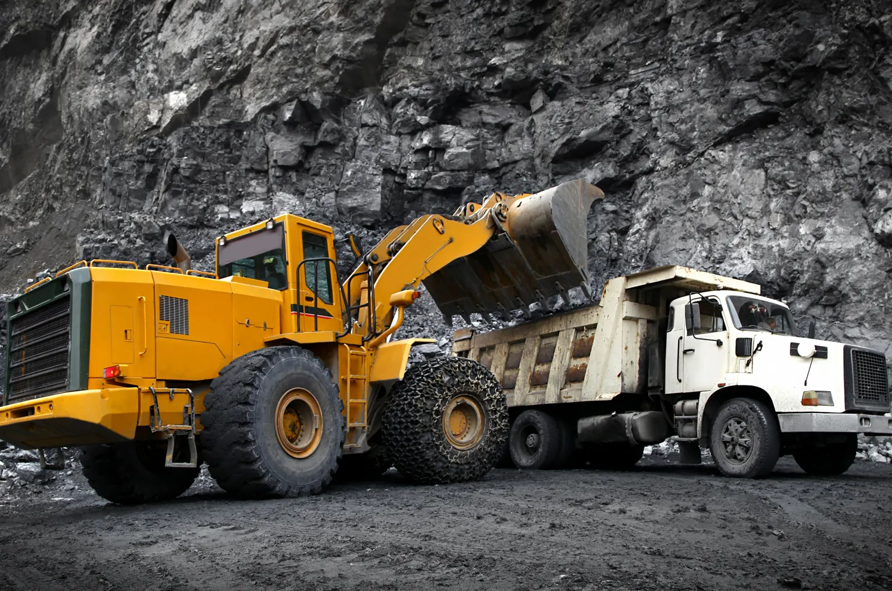

Reliable spare parts, technical expertise and aftermarket support solutions that keep critical mining equipment moving.

Tyrotec (Pty) Ltd is a provider of customised aftermarket support solutions dedicated to the mining industry. We help maximise equipment availability and performance with quality spare parts, technical expertise and reliable service.
Through engineered solutions and strategic partnerships with global manufacturers, we support smarter maintenance, lower total ownership costs and longer equipment lifecycles.
MORE ABOUT USA focused range of aftermarket mining support services engineered to protect uptime and optimise performance.
Maintenance parts sourced from reputable local and international suppliers.
EXPLORE SOLUTIONHydraulic pumps, motors, valves, electrical components and wear parts.
EXPLORE SOLUTIONComponent repairs and equipment rebuilds supporting asset lifecycles.
EXPLORE SOLUTIONData-led approaches to parts consumption and lifecycle management.
EXPLORE SOLUTIONWe are committed to being more than a supplier — we strive to be a strategic partner in productivity, with solutions that keep your operation running at its peak.
A closer look at the equipment, environments and engineering solutions that define the mining sector.